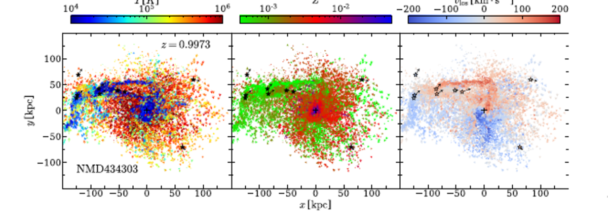

Featured paper
From large-scale environment to CGM angular momentum to star-forming activities - I. Star-forming galaxies
Wang et al. show that star-forming galaxies in IllustrisTNG can experience repeated star-forming and quiescent episodes. These cycles are tied to a synchronized breathing motion of the CGM: cold gas can spiral inward to fuel star formation, while feedback and environmental interactions later push the system back toward a quieter phase.
ADS paper